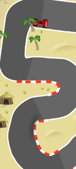
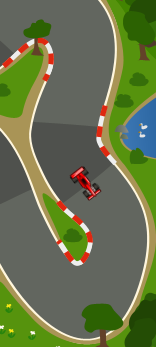
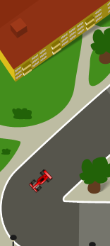
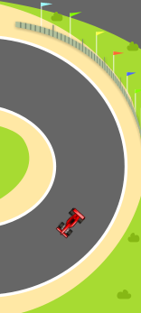

A small racing game in which the player steer the car with only one button. Different zones on the track determines which way the car turns.
The name is half-stolen from a game that helped inspire this project:
Go Left.
Tools used:
Planned release:
Q4 2011 Q1 2012. Currently up for sponsor viewing on
Flash Game License.
